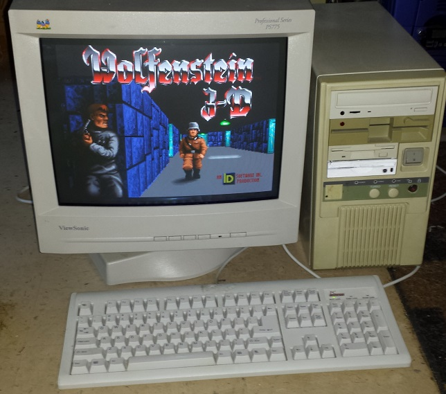

My first Computers
I learned GW-BASIC with Z80 Computer When I was an elementary student.

My parents bought FDD and QDD for me. These were used for playing game. It was the first time to use a DOS (MS-DOS).

My second computer was a DAEWOO X-II computers when I was a middle schooler.

GW-BASIC
IQ1000 had a interpreter for GW-BASIC language

>10 FOR A = 1 TO 10
>20 PRINT "A = ",A
>30 T=T+A
>40 NEXT A
>50 PRINT "Total = ",T
My Third Computer
IBM XT was my third computer when I was a high schooler.
I used it until when i was a freshman. I didn't understand MS-DOS evironment well. I couldn't program properly because I learned only GW-BASICS. XT didn't provide any comilers or interpreters. Fortunately, I started learning the turbo-c proraming language when I graduated from high school. Turbo-C was needed 3 inch Floppy disks to run it properly.
386 PC
This was my first color display computer. C++, JavaScript were my next programming language. I also learned ASM language. I also programed for 8bit PIC CPU with ASM language.
Pentimu MMX
When I finished military service, I used a Pentium MMX PC